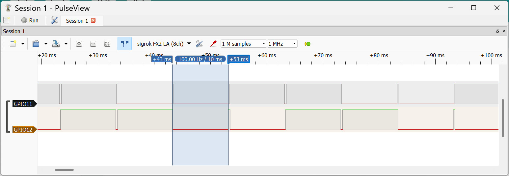

ตัวอย่างการเขียนโค้ด MicroPython สำหรับบอร์ด Espressif ESP32 (ตอนที่ 1)#
Keywords: Python 3, MicroPython, Espressif SoCs, ESP32 / ESP32-S3, Thonny IDE, Arduino Lab for MicroPython, Wokwi
- การทดลองโค้ด MicroPython สำหรับ ESP32
- Example 1: LED Blink with Time Delay
- Example 2: LED Blink without Time Delay
- Example 3: LED Blink with Multi-Threading
- Example 4: LED Blink with Coroutines
- Example 5: LED Blink with ESP32 Timer
- Example 6: Dual-GPIO Toggle with Multi-Threading
- Example 7: Dual-GPIO Toggle with Asyncio
- Example 8: Dual-GPIO Toggle with ESP32 Timers
- Example 9: Dual-GPIO Toggle with Event-based Synchronization
▷ การทดลองโค้ด MicroPython สำหรับ ESP32#
บทความนี้ซึ่งแบ่งออกเป็นหลายตอน นำเสนอตัวอย่างการเขียนโค้ด MicroPython สำหรับไมโครคอนโทรลเลอร์ ESP32 เพื่อแสดงให้เห็นรูปแบบการเขียนโค้ดสำหรับ Embedded Systems Programming และการทำงานของไมโครคอนโทรลเลอร์ ESP32 และได้มีการทดลองใช้กับบอร์ด ESP32 / ESP32-S3 ร่วมกับ MicroPython Firmware v1.26 มีการใช้ซอฟต์แวร์ดังต่อไปนี้ ในการเขียนและรันโค้ด
ในบทความนี้ มีตัวอย่างการเขียนโค้ด เพื่อใช้งาน GPIO (ดิจิทัล) ของ ESP32 เบื้องต้น
มีการนำเสนอและเปรียบเทียบรูปแบบการเขียนโค้ด เพื่อทำให้เกิดการเปลี่ยนสถานะลอจิกสำหรับขาเอาต์พุต GPIO เช่น การทำงานแบบมัลติเธรด
(Multi-threading) การใช้ฟังก์ชันของ uasyncio (Asynchronous Programming)
การใช้วงจร Hardware Timer ของชิป ESP32 เพื่อให้เกิดการทำงานของฟังก์ชันซ้ำด้วยอัตราคงที่ เป็นต้น
นอกจากนั้นแล้ว ยังมีตัวอย่างการวัดสัญญาณด้วย USB Logic Analyzer เพื่อศึกษาพฤติกรรมการทำงานของโค้ด MicroPython
แนะนำให้ผู้อ่านได้ศึกษาการใช้ซอฟต์แวร์ที่เกี่ยวข้องสำหรับ MicroPython-ESP32 จากบทความ "การเขียนโปรแกรม MicroPython สำหรับบอร์ด Espressif ESP32"
▷ Example 1: LED Blink with Time Delay#
โค้ดตัวอย่างนี้สาธิตการทำให้ LED กระพริบ
โดยเขียนค่าลอจิกสลับกันไป และเลือกใช้ขา GPIO 22 เป็นเอาต์พุต มีการหน่วงเวลาในแต่ละครั้ง โดยใช้คำสั่งtime.sleep()
ข้อสังเกต: การเลือกใช้หมายเลขขา GPIO อาจต้องปรับให้เหมาะสมกับขาสำหรับวงจร LED ของบอร์ด ESP32 ที่ใช้งานจริง
#-------------------------------------------------------------------------
# MicroPython-ESP32 Example: Different ways to blink an LED.
# This script shows how to toggle an LED and use the time.sleep() function
# to delay between consecutive LED toggles.
#-------------------------------------------------------------------------
from machine import Pin # Import Pin class to control GPIO pins
from time import sleep # Import sleep function for delays
# Create a Pin object for GPIO22 configured as an output
led = Pin(22, Pin.OUT)
# The main loop
while True:
value = led.value() # Read the current LED state
led.value( not value ) # Toggle the output.
print(f"LED: {led.value()}") # Print the current LED state
sleep(0.5) # Wait 0.5 seconds (blocking call)
รูป: ตัวอย่างการใช้งานซอฟต์แวร์ Arduino Lab for MicroPython ร่วมกับบอร์ด ESP32-S3
▷ Example 2: LED Blink without Time Delay#
โค้ดตัวอย่างนี้แตกต่างจากตัวแรก โดยหลีกเลี่ยงการใช้ฟังก์ชันหน่วงเวลาในไลบรารี time เช่น sleep()
หรือ sleep_ms() ซึ่งเป็นคำสั่งประเภท blocking call แต่ใช้วิธีตรวจสอบเวลาที่ผ่านไปจากการสลับสถานะลอจิกครั้งก่อน
โดยใช้ฟังก์ชัน time.ticks_diff(...) เปรียบผลต่างของค่าเวลา (หน่วยมิลลิวินาที)
หากมีค่ามากกว่าหรือเท่ากับระยะเวลาที่กำหนดไว้ ก็จะสลับสถานะลอจิกอีกครั้ง
#-------------------------------------------------------------------------
# This version avoids time.sleep() and uses time.ticks_ms()
# with time.ticks_diff() for a non-blocking delay, so other code
# can run in the same loop without being paused.
#-------------------------------------------------------------------------
from machine import Pin # Import Pin class to control GPIO pins
import time # Import time functions for timing operations
led = Pin(22, Pin.OUT) # Setup LED pin (GPIO 22) as output
interval_msec = 500 # Set the time interval for LED update
last_time = time.ticks_ms() # Store the last recorded time in msec
# The main loop
while True:
# Get the current time in milliseconds
now = time.ticks_ms()
# Check if the time interval has passed since the last toggle
if time.ticks_diff(now, last_time) >= interval_msec:
last_time = now # Update the last_time variable
led.value(not led.value()) # Toggle the LED state
print(f"LED: {led.value()}") # Print the current LED state
รูป: ตัวอย่างการใช้งานซอฟต์แวร์ Wokwi Simulator จำลองการทำงานของโค้ด MicroPython ด้วยบอร์ด ESP32 แบบเสมือนจริง
▷ Example 3: Multi-threaded LED Blinking#
โค้ดตัวอย่างนี้สาธิตการใช้งานไลบรารี _thread เพื่อใช้เรียกหรือรันฟังก์ชันในรูปแบบของ
"เธรด" (Thread) ซึ่งสามารถทำงานได้พร้อม ๆ กัน (Concurrency)
- ฟังก์ชัน
toggle_led_state(...)ทำหน้าที่สลับสถานะลอจิกและหน่วงเวลาตามที่กำหนด (ทุก ๆ 0.5 วินาที) - ฟังก์ชัน
print_led_state(...)ตรวจสอบการเปลี่ยนแปลงค่าลอจิกของ GPIO ทุก ๆ 1 มิลลิวินาที และถ้ามีการเปลี่ยนแปลงก็จะแสดงค่าลอจิกล่าสุด
#-------------------------------------------------------------------------
# This script demonstrates using MicroPython's _thread module to blink
# an LED and print the LED state changes in two separate threads.
# It shows how to use _thread in MicroPython, but there is a better way
# to do this task (=> use asyncio or timer).
#-------------------------------------------------------------------------
from machine import Pin # Import Pin class to control GPIO pins
from time import sleep_ms # Import millisecond sleep function
import _thread # Import MicroPython threading support
import time # Import MicroPython time library
import gc # Import MicroPython garbage collector
# Create a Pin object for GPIO 22 configured as an output
led = Pin(22, Pin.OUT)
# Global variable to store the last LED state
last_led_state = led.value()
# Define a function as the entry point for a thread
# This toggles the LED state every 500msec.
def toggle_led_state(pin):
while True:
pin.value(not pin.value()) # Toggle the LED state
sleep_ms(500) # Wait for 500 msec
# Define a function as the entry point for a thread
# This checks the LED state change every 1 msec
# and prints only when the state changes.
def print_led_state(pin):
global last_led_state
while True:
if last_led_state != pin.value(): # LED state change detected
last_led_state = pin.value() # Update the stored LED state
print(f"LED: {last_led_state}") # Print the LED state
sleep_ms(1) # Wait for 1 ms
# Start two new threads
_thread.start_new_thread(toggle_led_state, (led,))
_thread.start_new_thread(print_led_state, (led,))
# The main loop
while True:
pass
รูป: ตัวอย่างการใช้ซอฟต์แวร์ Thonny IDE เพื่อรันโค้ดตัวอย่างโดยใช้บอร์ด ESP32
▷ Example 4: LED Blink with Coroutines#
โค้ดตัวอย่างนี้สาธิตการใช้คำสั่งของไลบรารี uasyncio สำหรับ MicroPython
โดยประกอบด้วยฟังก์ชันแบบ Coroutine สองฟังก์ชัน (หรือเรียกว่า Async Function) ได้แก่
- ฟังก์ชัน
toggle_led_state(...)ทำหน้าที่สลับสถานะลอจิกและหน่วงเวลาตามที่กำหนด (ทุก ๆ 0.5 วินาที) - ฟังก์ชัน
print_led_state(...)ตรวจสอบการเปลี่ยนแปลงค่าลอจิกของ GPIO ทุก ๆ 1 มิลลิวินาที และถ้ามีการเปลี่ยนแปลงก็จะแสดงค่าลอจิกล่าสุด
ทั้งสองฟังก์ชันนี้ จะทำงานได้โดยสลับช่วงเวลาการทำงาน โดยมี Asyncio Scheduler ทำหน้าที่เป็นตัวกำหนดว่า จะให้ฟังก์ชันใดทำงานในช่วงเวลาใด
ในแต่ละฟังก์ชัน มีการใช้คำสั่ง await asyncio.sleep(...) เมื่อทำคำสั่งดังกล่าว
การทำงานของฟังก์ชัน จะหยุดชั่วคราว และถูกสลับให้ฟังก์ชันอื่นได้ทำงานต่อไป
#-------------------------------------------------------------------------
# This code demonstrates how to use MicroPython's uasyncio library
# to run multiple asynchronous tasks concurrently on an ESP32.
# The use of asyncio allows these tasks to share CPU time efficiently
# without blocking each other or requiring multiple threads.
#-------------------------------------------------------------------------
from machine import Pin # Import Pin class to control GPIO pins
import uasyncio as asyncio # Import MicroPython asyncio
# Create a Pin object for GPIO 22 configured as an output
led = Pin(22, Pin.OUT)
last_led_state = led.value() # Store the last LED state (initially)
# Async task to toggle the LED every 500 ms
async def toggle_led_state():
while True:
led.value(not led.value()) # Toggle the LED state
await asyncio.sleep(0.5) # Non-blocking delay 500 ms
# Async task to check and print LED state changes every 10 ms
async def print_led_state():
global last_led_state
while True:
current_state = led.value()
if last_led_state != current_state: # LED state change detected
last_led_state = current_state # Update stored state
print(f"LED: {last_led_state}") # Print LED state
await asyncio.sleep_ms(10) # Non-blocking delay 10 ms
# Main coroutine to run both tasks concurrently
async def main():
# Run toggle_led_state() and print_led_state() concurrently
await asyncio.gather(toggle_led_state(), print_led_state())
# Run the asyncio event loop
asyncio.run(main())
▷ Example 5: LED Blink with ESP32 Timer#
โค้ดตัวอย่างนี้ได้ใช้วงจร Hardware Timer ภายในชิป ESP32 ทำให้เกิดการรันฟังก์ชันซ้ำตามคาบเวลาได้
โดยไม่ต้องใช้เธรด (Thread) หรือการหน่วงเวลาในลูปหลัก
ฟังก์ชันประเภทนี้เรียกว่า ฟังก์ชัน Timer Callback ในตัวอย่างนี้ได้แก่
toggle_led_callback(...) และ print_led_state_callback(...)
และมีข้อสังเกตว่า การทำงานของฟังก์ชัน Timer Callback
จะต้องไม่มีการหน่วงเวลา และทำคำสั่งทั้งหมดของฟังก์ชันให้แล้วเสร็จ
#-------------------------------------------------------------------------
# This script demonstrates using MicroPython's machine.Timer
# to blink an LED and print its state periodically without threads.
# Timers execute callback functions in the background at fixed intervals.
#-------------------------------------------------------------------------
# Import Pin for GPIO, Timer for periodic tasks
from machine import Pin, Timer
# Create a Pin object for GPIO 22 configured as output
led = Pin(22, Pin.OUT)
# Store last LED state for change detection
last_led_state = led.value()
# A timer callback: toggles LED every 500 ms
def toggle_led_callback(timer):
led.value(not led.value()) # Toggle LED state
# A timer callback: checks LED state every 1 ms and prints on change
def print_led_state_callback(timer):
global last_led_state
current_state = led.value()
if current_state != last_led_state:
last_led_state = current_state
print(f"LED: {current_state}")
# Create and start timers
# Timer 0: Toggle LED every 500 ms
toggle_timer = Timer(0)
toggle_timer.init(period=500, mode=Timer.PERIODIC,
callback=toggle_led_callback)
# Timer 1: Monitor the LED state every 1 ms
print_timer = Timer(1)
print_timer.init(period=1, mode=Timer.PERIODIC,
callback=print_led_state_callback)
# The main loop does nothing, timers work in the background
while True:
pass
▷ Example 6: Dual-GPIO Toggle with Multi-Threading#
โค้ดตัวอย่างนี้สาธิตการใช้ไลบรารี _thread เพื่อรันฟังก์ชันที่ทำหน้าที่สลับสถานะลอจิกของขา GPIO โดยไม่มีการหน่วงเวลา
ในตัวอย่างจะใช้สองขา คือ GPIO11 และ GPIO12 ทำงานในเธรดแยกจากกัน
ผู้ใช้สามารถนำบอร์ดไปเชื่อมต่อกับอุปกรณ์ตรวจวัดสัญญาณ เช่น USB Logic Analyzer
เพื่อดูรูปแบบคลื่นสัญญาณเอาต์พุตที่ได้จากทั้งสองขา
#-------------------------------------------------------------------------
# This script shows how to toggle two pins (e.g. GPIO11 and GPIO12)
# in separate threads as fast as possible (no delays in loops)
#-------------------------------------------------------------------------
import _thread
from machine import Pin
# Configure pins as outputs
pins = [Pin(11, Pin.OUT), Pin(12, Pin.OUT)]
# Thread function: toggle pin as fast as possible
def toggle_pin(pin):
while True:
pin.value(not pin.value())
# Start threads
for pin in pins:
_thread.start_new_thread(toggle_pin, (pin,))
# Main loop does nothing — threads run independently
while True:
pass
ตัวอย่างการใช้อุปกรณ์ USB Logic Analyzer ร่วมกับซอฟต์แวร์ PulseView เพื่อวัดสัญญาณ ได้ผลดังนี้
รูป: ตัวอย่างคลื่นสัญญาณเอาต์พุตที่ขา GPIO11 และ GPIO12
จากรูปจะเห็นได้ว่า แต่ละเธรดนั้น จะทำงานตามฟังก์ชัน toggle_pin(...)
ที่ได้กำหนดไว้ แต่ใช้กับขา GPIO ต่างกัน ในช่วงเวลาใดถ้าฟังก์ชันรันโค้ด จะเห็นว่า สัญญาณมีการเปลี่ยนแปลงสถานะลอจิก
แต่จะไม่สามารถทำงานต่อเนื่องได้ เกิดการหยุดชั่วคราว (ช่วงนั้นไม่มีการสร้างสัญญาณพัลส์ออกมา)
และถูกสลับให้อีกฟังก์ชันหนึ่งได้รันโค้ดบ้าง ซึ่งเป็นไปตามรูปแบบการทำงานของ
Multi-threading โดยสลับกันไปเป็นช่วง ๆ แต่ละช่วงมีระยะเวลาประมาณ ~130 usec (ไมโครวินาที)
รูป: การวัดช่วงเวลาการทำงานของแต่ละฟังก์ชันก่อนถูกสลับให้ฟังก์ชันอื่นทำงานบ้าง
รูป: การวัดช่วงความกว้างของสัญญาณพัลส์ ซึ่งได้ค่าประมาณ 4 usec
จากรูปคลื่นสัญญาณจะเห็นได้ว่า พัลส์ที่เกิดขึ้นมีความกว้างช่วงที่เป็นลอจิก High ประมาณ 4 usec
▷ Example 7: Dual-GPIO Toggle with Asyncio#
โค้ดตัวอย่างนี้ได้เปลี่ยนจากการใช้ _thread มาเป็น uasyncio
เพื่อรันฟังก์ชันที่ทำหน้าที่สลับสถานะลอจิกของขา GPIO โดยไม่มีการหน่วงเวลา
ในตัวอย่างจะใช้สองขา คือ GPIO11 และ GPIO12 ทำงานแยกจากกัน
#-------------------------------------------------------------------------
# This script shows how to toggle two pins (e.g. GPIO11 and GPIO12)
# using asyncio coroutines instead of threads.
#-------------------------------------------------------------------------
import uasyncio as asyncio
from machine import Pin
# Configure pins as outputs
pins = [Pin(11, Pin.OUT), Pin(12, Pin.OUT)]
# Coroutine: toggle pin as fast as possible
async def toggle_pin(pin):
while True:
pin.value(not pin.value()) # Toggle the output
await asyncio.sleep_ms(0) # Yield to other coroutine
# Main entry point
async def main():
# Create toggle tasks for each pin
tasks = [asyncio.create_task(toggle_pin(pin)) for pin in pins]
await asyncio.gather(*tasks)
# Run event loop
asyncio.run(main())
จากผลการวัดสัญญาณด้วย USB Logic Analyzer จะเห็นได้ว่า ทั้งสองฟังก์ชันมีการสลับการทำงานทุก ๆ ~148 usec จึงเห็นเป็นรูปคลื่นสัญญาณสี่เหลี่ยมที่ขา GPIO ทั้งสอง
รูป: ตัวอย่างรูปคลื่นสัญญาณเมื่อไม่มีการหน่วงเวลา โดยใช้ await asyncio.sleep_ms(0)
แต่ถ้าเปลี่ยนจากกรณีแรกที่ใช้ await asyncio.sleep_ms(0) ซึ่งจะไม่มีการหน่วงเวลา
(และเป็นการส่งต่อให้อีกฟังก์ชันหนึ่งได้ทำงานต่อไป) ให้มีการหน่วงเวลา เช่น
ให้มีการหน่วงเวลาไว้อย่างน้อย 1 msec และ 10 msec
(มิลลิวินาที) ตามลำดับ โดยใช้คำสั่งต่อไปนี้ แล้วลองวัดสัญญาณเอาต์พุต ดูความแตกต่าง
await asyncio.sleep_ms(1)await asyncio.sleep_ms(10)
# Coroutine: toggle pin as fast as possible
async def toggle_pin(pin):
while True:
pin.value(not pin.value()) # Toggle the output
await asyncio.sleep_ms(1) # Sleep for 1 msec
ในกรณีที่สองนี้ จากผลการวัดสัญญาณด้วย USB Logic Analyzer แสดงให้เห็นได้ว่า ทั้งสองฟังก์ชันมีการสลับการทำงานจริง แต่ให้ผลแตกต่างจากกรณีแรกอย่างชัดเจน

รูป: ตัวอย่างรูปคลื่นสัญญาณเมื่อหน่วงเวลาด้วย await asyncio.sleep_ms(1)
รูป: ตัวอย่างรูปคลื่นสัญญาณเมื่อหน่วงเวลาด้วย await asyncio.sleep_ms(10)
ข้อสังเกต: การหน่วงเวลา 1~10msec ด้วยคำสั่ง await asyncio.sleep_ms(...)
ในความเป็นจริง อาจใช้เวลามากกว่าค่าตัวเลขที่กำหนดไว้ เช่น วัดได้ถึง 10 msec ซึ่งเป็นผลมาจากอัตราการทำงาน
หรือ Tick Rate ของระบบปฏิบัติการ FreeRTOS ที่ชิป ESP32 ใช้ในการทำงาน
ค่า Default FreeRTOS Tick Rate (CONFIG_FREERTOS_HZ) คือ 100 Hz
ดังนั้นจึงมีช่วงเวลาคาบเท่ากับ 10 msec หากต้องการจะใช้ FreeRTOS Tick Rate
สูงขึ้น เช่น 1 kHz จะต้องมีการคอมไพล์ MicroPython สำหรับ ESP32 เพื่อปรับเปลี่ยนค่าดังกล่าว
หากมีการเปลี่ยนเฟิร์มแวร์ เพื่อปรับค่าความถี่ FreeRTOS Tick Rate = 1000 Hz
การหน่วงเวลาด้วยคำสั่ง await asyncio.sleep_ms(1) เพื่อสร้างสัญญาณพัลส์ในโค้ดตัวอย่าง
จะส่งผลอย่างไรบ้าง ก็สามารถวัดสัญญาณเอาต์พุต ได้ตามรูปตัวอย่างต่อไปนี้
รูป: ตัวอย่างรูปคลื่นสัญญาณเมื่อหน่วงเวลาด้วย await asyncio.sleep_ms(1) แต่ใช้ความถี่
FreeRTOS Tick Rate = 1000 Hz
จากรูปสัญญาณจะเห็นได้ว่า ความกว้างพัลส์ของแต่ละสัญญาณลดลง และวัดได้ประมาณ 2msec
▷ Example 8: Dual-GPIO Toggle with ESP32 Timers#
ตัวอย่างถัดไปเป็นการใช้วงจร Hardware Timer ของชิป ESP32 ซึ่งสามารถใช้ได้ถึง 4 ชุด (Hardware Timer 0..3) และนำมาเปิดใช้งานจำนวน 2 ชุด เพื่อสร้างสัญญาณอินเทอร์รัพท์ และจะเกิดเหตุการณ์ทุก ๆ 1 มิลลิวินาที และทำคำสั่งของฟังก์ชันที่เป็น Timer Callback ตามที่กำหนดไว้ การทำงานของฟังก์ชัน Timer Callback จะต้องไม่มีการหน่วงเวลา และทำคำสั่งทั้งหมดของฟังก์ชันให้แล้วเสร็จ
ข้อสังเกต: ระยะเวลาในการเกิดอินเทอร์รัพท์ น้อยที่สุดคือ 1 msec หรือ กำหนดความถี่ได้สูงสุดไม่เกิน 1kHz
#-------------------------------------------------------------------------
# This script toggles two GPIO pins (GPIO11 & GPIO12) using ESP32 timers.
# Each pin is toggled periodically by its own timer interrupt callback,
# allowing very precise and efficient toggling without blocking the CPU.
#-------------------------------------------------------------------------
from machine import Pin, Timer
# Configure pins as outputs
pins = [Pin(11, Pin.OUT), Pin(12, Pin.OUT)]
# Create a timer callback function to toggle a GPIO pin
def make_toggle_callback(pin):
def toggle_pin(timer):
pin.value(not pin.value())
return toggle_pin # Return a Timer callback function
# Create timers and start them
TIMER_PERIOD_MSEC = 1
timers = []
callbacks = []
for i, pin in enumerate(pins):
tim = Timer(i) # Create a hardware timer object
timers.append(tim)
callbacks.append(make_toggle_callback(pin))
for i, tim in enumerate(timers):
tim.init(period=TIMER_PERIOD_MSEC, mode=Timer.PERIODIC,
callback=callbacks[i]) # Start timer
while True:
pass
ตัวอย่างการวัดสัญญาณเอาต์พุตด้วย USB Logic Analyzer มีดังนี้
รูป: ตัวอย่างรูปคลื่นสัญญาณทั้งสองช่อง วัดความกว้างของหนึ่งคาบได้ 1 msec หรือ มีความถี่เท่ากับ 1 kHz
▷ Example 9: Dual-GPIO Toggle with Event-based Synchronization#
โค้ดในตัวอย่างนี้สาธิตการสร้างฟังก์ชันแบบ Coroutine โดยมีสองฟังก์ชันที่ทำหน้าที่สลับสถานะลอจิกที่ขาเอาต์พุต ที่ขา GPIO11 และ GPIO12 ทั้งสองมีการสื่อสารกันโดยใช้ Events เพื่อส่งต่อลำดับการทำงานให้ทำงานสลับกัน
โค้ดตัวอย่างนี้สาธิตการใช้งาน ฟังก์ชันแบบ Coroutine (ทำงานแบบอะซิงโครนัส) จำนวน 2 ฟังก์ชัน
โดยแต่ละฟังก์ชันมีหน้าที่สลับสถานะลอจิก (Toggle) ที่ขาเอาต์พุต GPIO11 และ GPIO12 ตามลำดับ
ฟังก์ชันทั้งสองทำงานสลับกันโดยอาศัย Event จากไลบรารี uasyncio ทำหน้าที่เป็นตัว "ส่งต่อสิทธิ์"
(Token Passing) เพื่อควบคุมลำดับการทำงานไม่ให้ทำงานพร้อมกัน แต่จะรอให้ฟังก์ชันหนึ่งเสร็จก่อนแล้วส่งสิทธิ์ไปให้อีกฟังก์ชัน
#-------------------------------------------------------------------------
# This script demonstrates token passing synchronization (using events)
# between two async tasks, each toggling a separate GPIO pin alternately.
#-------------------------------------------------------------------------
import uasyncio as asyncio # Import asyncio for async support
from machine import Pin # Import Pin class to control GPIO pins
# Initialize two output pins (GPIO11 and GPIO12)
pins = [Pin(11, Pin.OUT), Pin(12, Pin.OUT)]
# Create two Event objects for synchronization between two tasks
events = [asyncio.Event(), asyncio.Event()]
async def task(id, pins, events):
# Compute the index of the next task in a circular manner
next_id = (id + 1) % len(pins)
pin = pins[id]
event = events[id]
while True:
await event.wait() # Wait until this task's event is set
event.clear() # Clear the event
pin.value(not pin.value()) # Toggle the pin state
await asyncio.sleep_ms(1) # Wait at least for 1 msec
events[next_id].set() # Notify the next task
async def main():
events[0].set() # Set the first event to start the token passing with task 0
for i, _ in enumerate(pins):
asyncio.create_task(task(i, pins, events)) # Create async task
await asyncio.sleep(10) # Run the event loop for 10 seconds before exiting
#asyncio.run(main()) # Start the asyncio event loop and run main()
try:
# Gets the async "scheduler"
loop = asyncio.get_event_loop()
# Runs that coroutine until it's completely done
loop.run_until_complete(main())
except KeyboardInterrupt:
# This part runs when Ctrl+C is pressed
print("Program stopped. Exiting...")
# Stop the async scheduler
loop.stop()
จากการวัดสัญญาณด้วย USB Logic Analyzer พบว่า:
- สัญญาณเดียวกัน: การเปลี่ยนสถานะลอจิกสองครั้งถัดกันของสัญญาณเดียวกัน เมื่อวัดสัญญาณ พบว่า มีระยะห่างประมาณ 20 msec เนื่องจากในโค้ด มีการกำหนดให้แต่ละฟังก์ชัน รอให้ฟังก์ชันอีกตัวทำงานเสร็จ (ให้หน่วงไว้อย่างน้อย 1 msec แต่หน่วงเวลาจริงประมาณ 10msec) ก่อนที่จะได้รับสิทธิ์ทำงานอีกครั้ง
- สัญญาณต่างกัน: เมื่อเปรียบเทียบการเปลี่ยนสถานะระหว่างสองสัญญาณ จะพบว่ามีระยะห่าง 10 msec (ใกล้เคียงกับ Tick Period ของ FreeRTOS) เพราะทั้งสองฟังก์ชันจะต้องทำงานสลับกัน
รูป: ตัวอย่างรูปคลื่นสัญญาณทั้งสองช่อง (GPIO-11 และ GPIO-12)
▷ กล่าวสรุป#
บทความนี้ได้นำเสนอเนื้อหาตอนที่ 1 ที่มีตัวอย่างการเขียนโค้ด เพื่อใช้งาน GPIO (ดิจิทัล) ของ ESP32 เบื้องต้น ได้มีการนำเสนอและเปรียบเทียบรูปแบบการเขียนโค้ดที่แตกต่างกันสำหรับการใช้คำสั่ง หรือไลบรารีต่าง ๆ ของ MicroPython และมีตัวอย่างการวัดสัญญาณด้วย USB Logic Analyzer เพื่อศึกษาพฤติกรรมการทำงานของโค้ด MicroPython และช่วยให้เข้าใจหลักการทำงานของ MicroPython สำหรับ ESP32 / ESP32-S3 ได้ดีขึ้น
บทความถัดไป: "ตัวอย่างการเขียนโค้ด MicroPython สำหรับบอร์ด Espressif ESP32 (ตอนที่ 2)
This work is licensed under a Creative Commons Attribution-ShareAlike 4.0 International License.
Created: 2025-08-11 | Last Updated: 2025-08-17